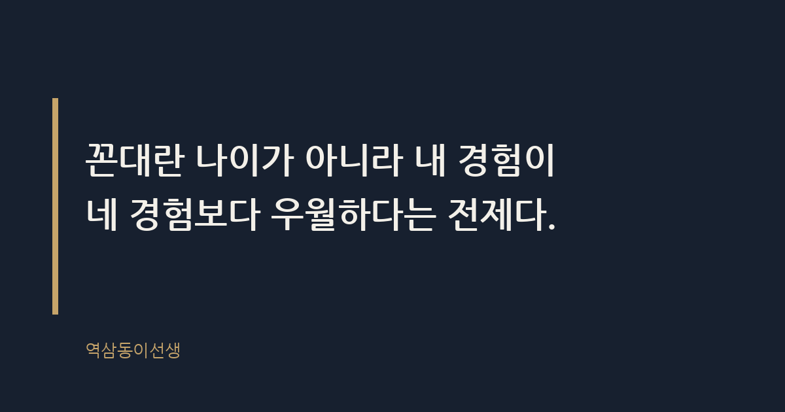

주제 MZ 후배와 일할 때 꼰대가 되지 않는 대화법 (evergreen / office)
제목 후보
메타 설명 꼰대가 되지 않는 MZ 후배 대화법. 결론과 설명의 순서를 바꾸는 법, 상황별 예시 문장까지 현장에서 통하는 대화 기술을 정리했다.
라벨 MZ후배대화법, 꼰대안되는법, 직장내소통, 세대차이극복, 후배피드백주는법, 회사생활팁, 직장인관계, 피드백화법, 상사후배소통, 꼰대테스트, MZ세대소통, 리더십대화
실용 자산 예시 문장 모음 — 대화법은 공감형 에세이지만 검색 의도가 '바로 써먹을 문장'에 있어 상황별 예시 문장 대비표를 넣었다
발행 전 팩트체크
이미지 (Blogger 편집기에 드래그해 넣으세요)
도입부 사진 · ⓒ Firmbee / Pexels

화요일 아침 아홉 시, 신입 마케터가 기획안을 메일로 보냈다. 오탈자가 세 군데, 숫자 하나가 틀려 있었다. 예전 같으면 바로 전화해서 "이거 봤어? 다시 해와"라고 했을 거다. 그런데 요즘은 그렇게 하지 않는다. 대신 메일에 "여기 숫자 한 번만 다시 확인해줄래?"라고 적었다. 삼십 분 뒤 수정본이 왔다. 깔끔했다.
전화를 걸었으면 더 빨랐을까. 아니다. 전화를 받았으면 후배는 "틀렸다"는 말을 듣기도 전에 이미 방어 태세를 갖췄을 거다. 목소리 톤 하나로 그날 하루의 기분이 결정되는 나이다. 그 나이를 지나와 놓고 그걸 잊어버리면, 그게 꼰대의 시작이다.
MZ 후배와 일할 때 꼰대가 되지 않는 대화법이란 내용을 바꾸는 일이 아니라 순서를 바꾸는 일이다. 결론을 먼저 던지고 이유를 나중에 붙이면 지시가 되고, 이유를 먼저 설명하고 결론을 나중에 말하면 설득이 된다. 같은 말인데 순서만 바뀌어도 상대가 받아들이는 무게가 완전히 달라진다.
세대 차이라고 뭉뚱그리기 쉽지만, 실제로 회의실에서 벌어지는 일은 대부분 정보 비대칭이다. 후배는 선배가 왜 그렇게 말하는지 맥락을 모르고, 선배는 후배가 왜 그렇게 반응하는지 맥락을 모른다. "저는 그렇게 생각 안 하는데요"라는 말을 반항으로 듣느냐, 질문으로 듣느냐는 전적으로 듣는 사람의 해석이다.
작년 가을, 후배 하나가 회의 중 눈을 피하며 네, 라고만 대답하던 날이 있었다. 나중에 알고 보니 그날 아침 전체 메일에서 자기 이름이 실수 사례로 짧게 언급된 걸 종일 곱씹고 있었다. 메일을 쓴 사람은 별 뜻 없이 사실관계만 적었는데, 받는 사람은 그 문장을 하루 내내 들고 다녔다. 맥락이 어긋나면 같은 문장도 전혀 다른 무게로 읽힌다.
후배가 피드백에 방어적으로 반응하는 이유는 지적을 "이 부분이 틀렸다"가 아니라 "너는 부족한 사람이다"로 번역해서 듣기 때문이다. 입사 1, 2년차는 자기 존재 가치를 업무 성과로만 증명받는 시기다. 실수 지적 하나가 인격 평가처럼 느껴지는 건 그 나이의 자연스러운 생리지, MZ만의 특성이 아니다. 나도 그랬다.
문제는 선배 쪽이 그 사실을 까먹는다는 거다. 10년, 15년 지나면 피드백과 비난을 분리해서 듣는 근육이 생긴다. 그 근육이 없는 사람에게 같은 말을 같은 톤으로 던지면 효과가 다를 수밖에 없다.
꼰대란 나이가 아니라 내 경험이 네 경험보다 우월하다는 전제를 깔고 말하는 사람이다. 이 전제가 드러나는 패턴은 생각보다 단순하다.
첫째, 결론부터 지시하고 과정을 생략한다. "그냥 이렇게 해"라는 말에는 이유가 없다. 둘째, 자기 경험을 보편 법칙으로 일반화한다. "나 때는 그렇게 안 했어"는 한 사람의 경험을 전체 진리로 포장하는 말이다. 셋째, 비교로 압박한다. "요즘 애들은"이라는 문장이 입에서 나오는 순간, 이미 그 대화는 설득이 아니라 선언이 된다.
옆에서 오래 지켜본 임원들 중에 후배들에게 오래 신뢰받는 사람들은 공통적으로 이 세 패턴을 피했다. 지시 대신 질문을 던지고, 경험을 말할 때는 "내 경우엔 이랬는데, 지금은 다를 수 있다"는 단서를 꼭 붙였다. 신기하게도 그런 선배가 말을 꺼내면 회의실에서 후배들 손끝에서 펜이 움직이는 속도가 달라진다. 받아 적을 가치가 있다고 느끼는 거다.
피드백의 기본 순서는 결론-이유다. "이거 다시 해, 왜냐하면 타겟이 안 맞아서야." 이걸 뒤집어서 이유-결론으로 말하면 완전히 다른 대화가 된다. "이 기획안을 2030 여성 타겟으로 보면, 지금 카피가 조금 올드하게 읽히는데 어떻게 생각해?"
두 문장 모두 결국 "다시 써야 한다"는 메시지를 담고 있다. 하지만 앞 문장은 지시고 뒤 문장은 대화다. 뒤 문장에는 후배가 끼어들 틈이 있다. "아, 저는 반대로 올드한 느낌이 신뢰감을 줄 거라 생각했는데요"라는 대답이 나올 수도 있다. 그 순간 대화가 되고, 더 나은 안이 나올 확률도 생긴다.
순서를 바꾸는 데는 비용이 든다. 결과만 먼저 말하면 30초가 걸리고, 이유부터 설명하면 2분이 걸린다. 그 1분 30초를 아까워하는 선배일수록 꼰대 소리를 자주 듣는다. 시간을 아끼려다 신뢰를 잃는 셈이다.
요즘 피드백의 상당 부분은 텍스트로 오간다. 카톡, 슬랙, 메일. 문제는 텍스트에는 톤이 없다는 거다. "확인 부탁드립니다." 이 한 문장도 마침표 하나로 분위기가 갈린다. 마침표를 붙이면 사무적이고 차갑게 읽히고, 느낌표를 붙이면 급하게 재촉하는 것처럼 읽힌다. 말로 하면 1초짜리 톤인데, 글로 쓰면 그 톤을 해석하는 몫이 온전히 읽는 사람에게 넘어간다.
어느 팀장이 금요일 퇴근 무렵 슬랙에 "이 부분 다시 봐주세요"라고만 남겼다가, 후배가 주말 내내 뭘 잘못했는지 몰라 전전긍긍했다는 이야기를 들은 적 있다. 본인은 별생각 없이 보낸 다섯 글자였는데, 받는 쪽에서는 주말을 통째로 갉아먹는 문장이 됐다. 텍스트 피드백을 보낼 때는 이유를 한 줄이라도 같이 적는 게 좋다. "이 부분 다시 봐주세요, 숫자가 안 맞아서요" 정도만 붙여도 받는 사람의 주말이 편해진다.
말투를 바꾸는 가장 빠른 방법은 자주 벌어지는 상황에서 쓸 문장을 미리 준비해 두는 거다. 아래는 실제로 효과를 봤던 문장과, 들었을 때 반감을 키웠던 문장을 나란히 정리한 표다.
| 상황 | 이렇게 말한다 | 이건 피한다 |
|---|---|---|
| 반복된 실수를 지적할 때 | "이 부분, 지난번에도 비슷하게 넘어갔던 것 같은데 같이 체크해볼까?" | "이거 몇 번째야, 왜 자꾸 똑같은 실수를 해?" |
| 후배가 "왜요?"라고 물을 때 | "좋은 질문이야, 이유는 이렇고 이런 배경이 있어." | "그냥 시키는 대로 해, 다 이유가 있어서 그래." |
| 회식 참석을 조율할 때 | "오늘 회식인데 올 수 있으면 좋고, 못 와도 괜찮아." | "요즘 애들은 회식도 안 오려고 하네." |
| 후배가 정시 퇴근할 때 | "오늘 일정 다 끝났어? 그럼 들어가도 돼." | "벌써 가게? 나 때는 상상도 못했는데." |
| 후배가 다른 의견을 낼 때 | "그 관점은 몰랐네, 조금 더 설명해줄래?" | "그건 경험이 부족해서 하는 소리야." |
대화법을 바꾼다고 매번 완벽한 문장을 고민할 필요는 없다. 회의실에서 반복해서 쓸 수 있는 질문 몇 개만 몸에 붙여도 분위기가 달라진다.
세 질문의 공통점은 답을 정해두지 않는다는 거다. 질문처럼 보이지만 사실은 답이 정해진 "그거 아니지 않아?" 식 화법과는 다르다. 진짜 질문은 듣는 사람이 생각할 틈을 준다. 그 틈에서 가끔 선배가 생각 못 한 답이 나온다.
여기서 오해가 하나 생긴다. 꼰대가 되지 않으려고 후배와 친구처럼 지내려는 선배들이 있다. 그건 또 다른 방향의 실패다. 적정 거리를 없애면 후배는 선을 잃고, 선배는 결정권을 잃는다. 권위를 내려놓는 것과 역할을 없애는 것은 다른 일이다.
잘 되는 선배들을 보면 역할 구분은 명확히 하되, 그 역할 안에서 설명을 생략하지 않았다. "나는 팀장이고 이 결정은 내가 한다. 다만 왜 이렇게 결정했는지는 설명하겠다"는 태도다. 결정권은 선배에게 있지만, 그 결정에 이르는 과정은 투명하게 공유한다. 이게 거리감과 수평성을 동시에 갖는 방법이다.
퇴사 면담에서 가장 많이 들은 이유 중 하나가 "이유도 모르고 혼났다"는 말이었다. 혼난 내용 자체보다 이유가 설명되지 않은 게 상처로 남는다. 씁쓸하면서도 꽤 인상적인 지점이다. 결국 사람은 틀린 것보다 이해받지 못한 것에 더 오래 아파한다.
함께 보면 좋은 주제로 '피드백을 줄 때 상처 주지 않는 말하기'와 '세대 차이 없는 회의 진행법'이 있다.
Q. 피드백 한 번 잘못 줬다가 후배가 입을 닫아버린 적, 저만 있는 건 아니죠?